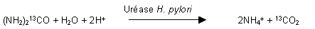

RÉSUMÉ DES CARACTÉRISTIQUES DU PRODUIT
ANSM - Mis à jour le : 30/03/2009
UBIT 100 mg, granulés pour solution buvable en sachet-dose
2. COMPOSITION QUALITATIVE ET QUANTITATIVE
Un sachet-dose (2 g) contient 100 mg d'urée 13C
Pour les excipients, voir 6.1
Granulés pour solution buvable.
Granulés blancs.
4.1. Indications thérapeutiques
L'indication de UBIT est le diagnostic in vivo de l'infection gastroduodénale par Helicobacter pylori.
4.2. Posologie et mode d'administration
UBIT est un test de diagnostic respiratoire. La posologie chez l'adulte est de 1 sachet de 2 grammes de granulés à prendre après dissolution dans 100 ml d'eau de boisson. Il est préférable que le patient soit à jeun (sans boire ni manger), depuis au moins 8 heures, de préférence après une nuit de jeûne.
Il est essentiel de respecter les instructions d'utilisation (section 6.6) afin de garantir la validité des résultats du test. S'il s'avère nécessaire de recommencer l'examen, celui-ci ne devra pas être renouvelé avant le lendemain.
Pas de contre-indications connues.
4.4. Mises en garde spéciales et précautions d'emploi
La positivité du test respiratoire à l'urée ne confirme pas cliniquement à lui seul qu'une thérapie d'éradication soit indiquée. D'autres diagnostics utilisant des méthodes endoscopiques invasives pourraient être indiqués, afin d'exclure la présence de toute autre complication, comme par exemple l'ulcère gastrique, la gastrite auto-immune ou des tumeurs.
Dans le cas particulier des gastrites atrophiques, le test respiratoire est susceptible de donner de faux positifs. Ainsi, d'autres tests pourraient être demandés pour confirmer la présence d'H. pylori.
Si la répétition du test est nécessaire, comme en cas de vomissement pendant la réalisation du test, elle ne doit pas avoir lieu avant le lendemain.
Il n'y a pas suffisamment de données sur la fiabilité du diagnostic de UBIT pour recommander son utilisation chez les patients avec une gastrectomie partielle ou chez les patients de moins de 18 ans.
Afin d'éviter des résultats faussement négatifs, le test respiratoire à l'urée ne doit pas être réalisé moins de 4 semaines après une thérapie antibactérienne systémique, ni moins de 2 semaines après la dernière prise d'antiacides. Ceci est tout particulièrement important après une thérapie d'éradication.
Les résultats faussement négatifs du test respiratoire à l'urée peuvent également être dus à l'activité de l'uréase des bactéries oropharyngées, dans le cas où les échantillons respiratoires sont prélevés 10 à 15 minutes après ingestion de la solution test. Un rinçage de la bouche avec de l'eau après l'administration permet de réduire cet effet.
4.5. Interactions avec d'autres médicaments et autres formes d'interactions
Tout traitement susceptible d'exercer une influence sur H. pylori ou sur l'activité de l'uréase bactérienne peut modifier les résultats du test respiratoire à l'urée.
La suppression de H. pylori est susceptible de donner des résultats faussement négatifs. C'est pourquoi le test ne doit pas être réalisé moins de 4 semaines après une thérapie antibactérienne systémique et moins de 2 semaines après la dernière prise de médicaments anti-acides. Ceci est tout particulièrement important après une thérapie d'éradication.
Etant donné que l'innocuité de la préparation n'a pas été établie chez la femme enceinte ou pendant l'allaitement, l'utilisation d'UBIT chez la femme enceinte ou susceptible de le devenir et pendant l'allaitement n'est pas recommandée.
4.7. Effets sur l'aptitude à conduire des véhicules et à utiliser des machines
Pas d'effets connus.
Essais cliniques
Des effets indésirables avec relation de causalité n'ont été rapportés que pour 8 patients sur 1150 patients inclus dans des essais cliniques sur le test respiratoire à l'urée. Il s'agissait de distension abdominale, diarrhée, gène épigastrique et augmentation du potassium sanguin.
Données post-AMM
Des nausées et des vomissements ont été rapportés très rarement (≤ 1/10 000).
Des incidents isolés (≤ 1/10 000) de dyspnées, urticaire, rush cutané, œdème du visage et bouffées de chaleur ont été rapportés. Ces symptômes pourraient indiquer une réaction anaphylactique ou anaphylactoïde.
Dans la mesure où un sachet de granulés UBIT contient seulement 100 mg de 13C-urée, ce qui ne représente qu'une fraction de la quantité contenue quotidiennement dans les apports alimentaires naturels, le risque de surdosage est improbable.
5. PROPRIETES PHARMACOLOGIQUES
5.1. Propriétés pharmacodynamiques
Classe pharmacothérapeutique: autres produits de diagnostic Code ATC: V04CX
Le carbone 13C est un isotope naturel stable, non radioactif, employé pour le marquage de l'urée.
Chez les patients infectés ou non, une quantité significative de la 13C-urée ingérée est absorbée par la paroi intestinale et excrétée sous forme inchangée dans l'urine.
L'activité enzymatique gastrique de type uréase n'est présente que chez les patients infectés par H. pylori. L'uréase catalyse le clivage de la 13C-urée en ammoniac et en dioxyde de carbone. Dans l'estomac, l'ammoniac obtenu est immédiatement transformé en ammonium:

Le 13CO2 passe dans le sang circulant par diffusion à travers la paroi des vaisseaux puis il est transporté jusqu'aux poumons où il est éliminé dans l'air expiré. Par conséquent, le rapport 13C/ 12C dans l'air expiré est significativement augmenté en présence d'H. pylori dans l'estomac.
Le rapport 13C/ 12C est mesuré par spectrophotométrie infrarouge (IRS) ou chromatographie en phase gazeuse couplée à la spectrophotométrie de masse des isotopes (CG/IRMS). L'enrichissement en 13C est exprimé par la différence absolue entre le rapport 13C/ 12C initial et celui mesuré 20 minutes après l'ingestion (valeur de Δ13CO2 [‰]).
Une augmentation de Δ13CO2 supérieure ou égale à 2,5‰ (valeur limite) après l'ingestion indique un résultat positif (infection par H. pylori).
5.2. Propriétés pharmacocinétiques
Un pourcentage important de la 13C-urée administrée par voie orale est absorbé par la paroi intestinale et excrété sous forme inchangée par voie rénale. En présence d'H. pylori, la 13C-urée est en partie métabolisée en ammonium et 13CO2 dans l'estomac. Le reste est réintégré dans le cycle de l'urée. Dans les 30 minutes qui suivent l'ingestion de 100 mg de 13C-urée, la proportion de 13CO2 dans l'air expiré augmente significativement chez les sujets infectés.
Lors des études cliniques chez des volontaires sains, aucune augmentation notable d'azote non protéique et d'ammonium dans le sérum, ou d'urée dans les urines, n'a été observée, même après administration de la dose la plus élevée, soit 300 mg de 13C-urée.
5.3. Données de sécurité préclinique
Les données précliniques obtenues chez l'animal n'apportent aucune information relative à l'usage clinique du test respiratoire à l'urée.
Sans objet.
3 ans.
La solution obtenue après dissolution des granulés doit être administrée immédiatement après préparation.
6.4. Précautions particulières de conservation
Pas de précautions particulières de conservation.
6.5. Nature et contenu de l'emballage extérieur
Sachet-dose (PET/Aluminium/PE) contenant 2 g de granulés.
Boîte de 1 sachet-dose contenant 2 g de granulés pour solution buvable.
Boîte de 20 sachets-dose contenant chacun 2 g de granulés pour solution buvable.
Boîte de 100 sachets-dose contenant chacun 2 g de granulés pour solution buvable.
6.6. Précautions particulières d’élimination et de manipulation
Le test respiratoire à l'urée doit être effectué en présence de personnel médical qualifié ou mieux, sous le contrôle d'un médecin.
Un récipient pour le prélèvement des échantillons respiratoires (sac ou tube) sera choisi en fonction de la méthode analytique.
La méthode analytique déterminera également le nombre d'échantillons par temps de prélèvement et le volume de prélèvement nécessaire pour la mesure.
Le patient devra se présenter au médecin le matin. Le test sera réalisé sur un patient à jeun (sans boire ni manger), depuis au moins 8 heures, de préférence depuis la veille au soir. Le patient devra rester au repos pendant 10 minutes avant l'épreuve.
Le patient devra rester assis calmement pendant le déroulement de l'examen.
1. La procédure du test commence par l'étiquetage des collecteurs d'échantillons respiratoires et par le recueil du prélèvement initial.
2. Le patient devra souffler lentement et régulièrement dans le collecteur puis fermer celui-ci immédiatement après. Dans le cas où la spectrophotométrie infrarouge est utilisée pour analyser les échantillons respiratoires, il est recommandé que le patient retienne sa respiration pendant environ 10 secondes immédiatement avant de souffler.
3. La solution test est préparée en versant le contenu du sachet de 13C-urée dans un verre rempli de 100 ml d'eau de boisson puis en laissant les granulés se dissoudre. La solution ne devra pas être utilisée si elle présente un aspect trouble ou si les granulés ne se sont pas complètement dissous.
4. Dès que les granulés sont complètement dissous, le patient doit boire rapidement la totalité de la solution test.
5. La personne menant le test doit noter l'heure d'ingestion de la solution test.
6. Après ingestion de la solution test, le patient doit se rincer 2 à 3 fois la bouche avec de l'eau, afin d'éliminer toute trace de 13C-urée résiduelle dans la cavité buccale, évitant ainsi de fausser les résultats du test.
7. Le patient doit alors passer en position de décubitus latéral gauche pendant 5 minutes puis se remettre à nouveau assis bien droit et rester calme jusqu'au deuxième échantillonnage.
8. 20 minutes après l'ingestion de la solution test, le deuxième échantillon respiratoire est prélevé dans le collecteur correspondant, dûment étiqueté comme indiqué au point 2.
Analyse des échantillons respiratoires et spécification des appareils de mesure
L'enrichissement des gaz respiratoires en 13C est exprimée par la différence absolue (Δ13CO2[‰]) entre le rapport 13C/ 12C avant ingestion de la solution test (valeur de base) et 20 minutes après l'ingestion. Si la valeur de Δ13CO2 est supérieure ou égale à 2,5‰, le patient est alors considéré comme étant infecté par Helicobacter pylori.
Dans les conditions décrites ci-dessus, le test respiratoire présente une sensibilité de 98,2% (intervalle de confiance 95%: [94,8% - 99,6%]) et une spécificité de 97,9% (intervalle de confiance 95%: [88,9% - 99,9%]), si l'on compare aux valeurs standards obtenues avec un modèle de référence employant une méthode invasive.
Deux méthodes d'analyse ont été validées lors des essais cliniques sur le test respiratoire à l'urée: spectrophotométrie infrarouge (IRS) et chromatographie en phase gazeuse couplée à la spectrophotométrie de masse des isotopes (CG/IRMS).
Il faut s'assurer que la concentration des échantillons en CO2 ainsi que le rapport 13C/ 12C ne change pas entre le prélèvement et l'analyse des échantillons. C'est le cas lorsque des collecteurs d'échantillon possèdent des capteurs d'humidité sont utilisés. L'utilisation de tels récipients doit être évitée.
Spécification de la détermination du rapport 13C/ 12C
A/ Validation de la méthode de spectrophotométrie infrarouge
Fourchette de concentration en CO2: 1% - 6%.
|
Linéarité: |
y = 1,01 x - 0,20; r2 = 1,000 |
|
Sensibilité: |
0,5‰ (limites de détection de Δ 13C) |
|
Reproductibilité: |
Ecart-type = ± 0,5‰ ou moins pour une concentration de CO2 de 3% dans l'air expiré |
|
Validité: |
Erreur de mesure = ± 0,5‰ ou moins (pour Δ13C = 0-50‰) |
|
|
Erreur de mesure = ± 1 ‰ ou moins (pour Δ13C = 100‰). |
B/ Validation de la méthode de chromatographie en phase gazeuse couplée à la
spectrophotométrie de masse des isotopes
Fourchette de concentration en CO2: 1% - 5% (pour un volume d'air expiré de 10 ml)
|
Linéarité: |
y = 1,0183 x + 0,5686; r2 = 1,000 |
|
Sensibilité: |
0,2‰ (limites de détection de Δ 13C) |
|
Reproductibilité: expiré |
Ecart-type (δ13C) = ± 0,2‰ ou moins pour une concentration de CO2 de 3% dans l'air |
|
Validité: dans l'air expiré |
Ecart-type (δ13C, n = 5) = ± 0,3‰ ou moins pour une concentration de CO2 de 1-5% |
Le gaz de référence doit être standardisé par rapport à un standard international reconnu afin de permettre les comparaison des résultats entre laboratoires.
Explication des résultats:
δ13C = différence exprimée en partie par millier (‰), par rapport à un standard international
Δ 13C et Δ13CO2: différence entre les mesures effectuées avant et après ingestion de la solution de 13C-urée.
Le patient est considéré comme non infecté si la valeur de Δ 13CO2 est inférieure à 2,5‰.
7. TITULAIRE DE L’AUTORISATION DE MISE SUR LE MARCHE
OTSUKA PHARMA
HOCHHAUS AM PARK
GRUNEBURGWEG 102
60323 FRANKFURT AM MAIN
ALLEMAGNE
8. NUMERO(S) D’AUTORISATION DE MISE SUR LE MARCHE
· 356 167-3: 2 g en sachet-dose (PET/Aluminium/PE), boîte de 1.
· 359 775-4: 2 g en sachet-dose (PET/Aluminium/PE), boîte de 20.
· 563 744-6: 2 g en sachet-dose (PET/Aluminium/PE), boîte de 100.
9. DATE DE PREMIERE AUTORISATION/DE RENOUVELLEMENT DE L’AUTORISATION
[à compléter par le titulaire]
10. DATE DE MISE A JOUR DU TEXTE
[à compléter par le titulaire]
Sans objet.
12. INSTRUCTIONS POUR LA PREPARATION DES RADIOPHARMACEUTIQUES
Sans objet.
Liste I